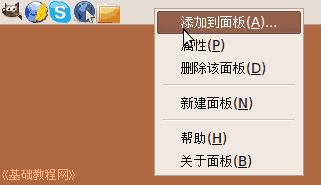
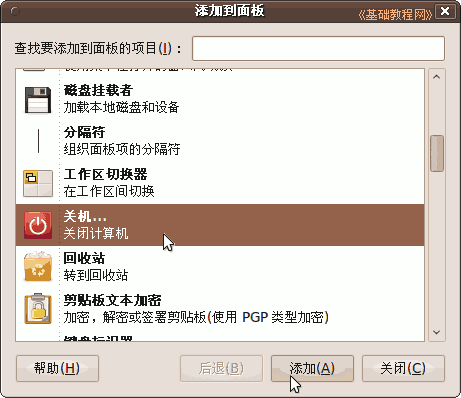
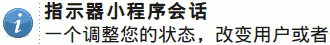
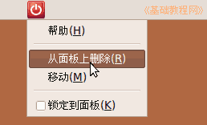
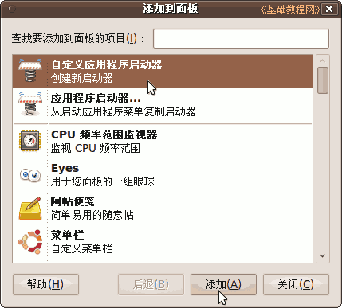
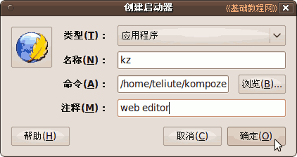
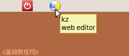

Ubuntu/GNOME 桌面程序指南
作者：TeliuTe 来源：基础教程网
四、添加到面板 返回目录 下一课面板附带了许多小程序，自己也可以添加程序启动器；
1、面板小程序
1）在面板空白处点右键，选“添加到面板”命令；

2）找到“关机”单击选中，再点下面的“添加”按钮，就可以添加上去了，也可以直接拖到面板上；

3）面板上就出来一个关机图标，点击就可以执行关机操作，面板右侧的通知区域图标，对应的是指示器小程序，如果删除了，可以再添加上去；

4）要是不想要这个面板图标了，只需瞄准点右键，选“从面板删除”即可；

2、自定义启动器
1）打开添加到面板，选第一个“自定义应用程序启动器”，然后点下边的“添加”按钮；

2）在出来的对话框中，输入程序名称，点“浏览”找到程序文件，再点左边的图标，打开一个图片文件夹，在里面选一个图片作图标；

3）点“确定”后，面板上就出来一个自定义的程序图标，点击就可以打开这个程序；

本节学习了添加面板小程序的基础知识，如果你成功地完成了练习，请继续学习下一课内容；
本教程由86团学校TeliuTe制作|著作权所有
基础教程网：http://teliute.org/
美丽的校园……
转载和引用本站内容，请保留作者和本站链接。